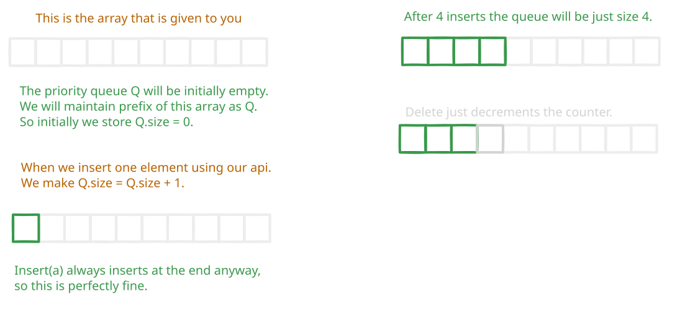

Binary Heaps
If keys were strings, then the ordering could be lexicographical. If they were integers they could be ordered from lowest to highest and so on.
Having learned how to implement rooted binary trees, today we will learn how to implement another tree like data structures called, binary Heaps.
We will implement an interface called the priority queue which is a subset of the set interface we have been implementing all this while.
We will assume that there is some total ordering defined over the keys1 of our data X.
Often this ordering is referred to as the priority of the keys.
The interface requires us to construct the following operations:
build(X): Given a collection of $n$ keys build the initial data structure.insert(k): Insert keykinto the data structure.delete_max(): Remove the maximal key from the data structure,find_max(): Return the maximal key.
Why would you want something like this? Packets going into a router, and you’d want the highest ones to be processed first. Same with processes running on a CPU.
With this problem defined, think about how we would use all the data structures we have discussed so far to solve this problem?
Perhaps the AVL trees that implement the set interface? It gives us everything in time $\log_2 n$ time and build is $n\log n$ time as we might have to sort the initial collection first.
We can use subtree augmentation to implement find_max() in $O(1)$ time as each node can store the maximal key in its subtree.
In some ways we are done, we cannot really do better. But we foreshadowed that we will go over the binary heap, which is in essence a simplification of the above data structure with the same time bounds for the above subset of operations.
| Data Structure | build(X) | insert(key) | delete_max() | Time | In-place? |
|---|---|---|---|---|---|
| Dynamic Array | $O(n)$ | $O(1_a)$ | $O(n)$ | $O(n^2)$ | Yes |
| Sorted Array | $O(n \log n)$ | $O(n)$ | $O(1)$ | $O(n^2)$ | Yes |
| AVL Tree | $O(n \log n)$ | $O(\log n)$ | $O(\log n)$ | $O(n \log n)$ | No |
| Heap Sort | $O(n \log n)$ | $O(\log n)$ | $O(\log n)$ | $O(n \log n)$ | Yes |
Go over the operations
-
In an unsorted array, insert is amortised $O_T(1)$ (just stick at the end), and delete max is $O(n)$. We need to go find the maximal element which takes time $O(n)$, and then we can swap it with the last element, and change the size of the array.
-
In a sorted array,
delete_max()is $O(1)$ as it’s always the last element.insert(k)is linear as we might do binary search to find where to insert, but once I find the location, I still have to move things over.
So we have fast insert in one case, and fast delete in the other, and we want the best of both worlds.
Priority Queue Sort
Given any data structure that implements the priority queue interface. I can implement a sorting algorithm. How? Well insert all the items, and then delete one at a time. At each delete we get the largest element.
The time complexity is $n\cdot T_{\text{insert}} + T_{\text{delete}}$
Now for the existing data structures we already have the time complexity of all these operations. So we get the following.
AVL sort is not in place.
Heap Sort
We will show
-
build(X): takes time $O(n)$. -
insert(k): takes time amortised $O_a(\log n)$ -
delete(k): takes time amortised $O_a(\log n)$ -
sort(): in place and time $O(n \log n)$.
The key thing to remember about this data structure is that we will use an array to represent a tree. If it were any tree this would not be possible, but as we will have a complete binary tree things will work out. That is although the memory representation of the data structure is an array, one should really think of the operations as if we were doing them on a tree.

Loosely a binary is complete if every level but the last level of the tree is fully balanced, and in the last level, leaves are filled in left to right.
Write things in depth order (note this is very different from traversal order or what we called in-order).
There is a bijection between complete binary trees and arrays. That is for every complete binary tree there is one unique array that represents it. Why? Because the completeness properties forces my hand. There is only one tree shape that stores $n$ keys. We fill in each level left to right.
Note that if we wanted to solve the whole set interface we cannot always guarantee a complete binary tree. But as we are supporting a smaller set of operations, we can guarantee to represent data with a complete binary tree. A complete binary tree is in some ways the best kind of tree we could hope for for the problems we have been discussing. It’s height is guaranteed to be at most $\lceil \log_2 n\rceil$. And as we have completeness, we do not even need to store left/right and parent like we did with a normal tree. This is an implicit data structure. We do not need to store pointers.
left(i) = 2i + 1right(i) = 2i + 2parent(j)= $\lfloor (j-1)/2\rfloor$
So do not need any pointers, i can just compute them using index arithmetic. This is only possible because we are guaranteed that we have a complete binary tree.
As a direct corollary we get that the root is the maximum. So finding the maximum is very easy. Deleting it is a little annoying, as we are deleting the root, and after the delete we want to guarantee that we are still a complete binary tree.
Insert
- Add to the end of the array $Q$.
- Then call
max_heapify_up(|Q| - 1)
def max_heapify_up(i):
if Q[parent(i)] < Q[i]:
Q[parent(i)], Q[i] = Q[i], Q[parent(i)]
max_heapify_up(parent(i))So the runtime is at most $O(h) = O(\log_2 n)$.
Delete
Delete is almost the same.
- Swap $Q[0]$ and $Q[Q.len -1]$.
- Then delete last.
- Call
max_heapify_down(0).
def max_heapify_down(i):
if i is leaf:
return
if Q[i] < Q[2i + 1] or Q[i] < Q[2i+2]:
Q[i], max(Q[2i +1], Q[2i + 2]) = max(Q[2i +1], Q[2i + 2]), Q[i]
max_heapify_down(max child)Now we are nearly done, except we have not told you how to make this an in place sorting algorithm. The following figure illustrates how we never actually have to do in any extra storage.
